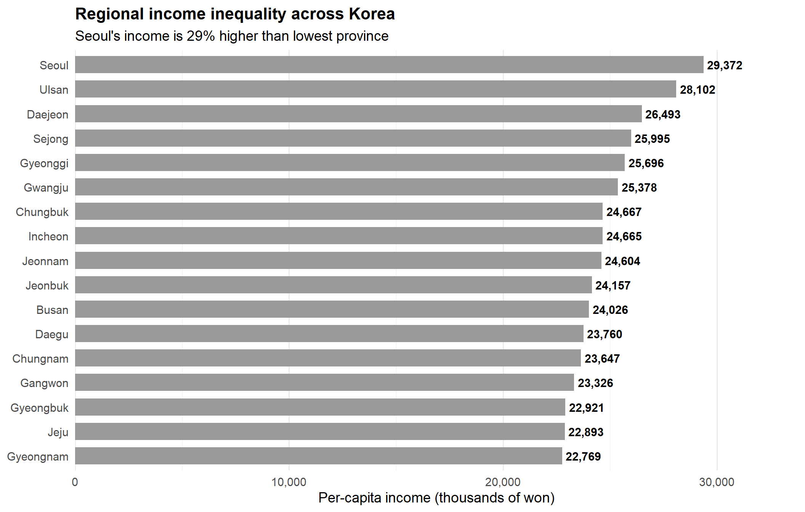
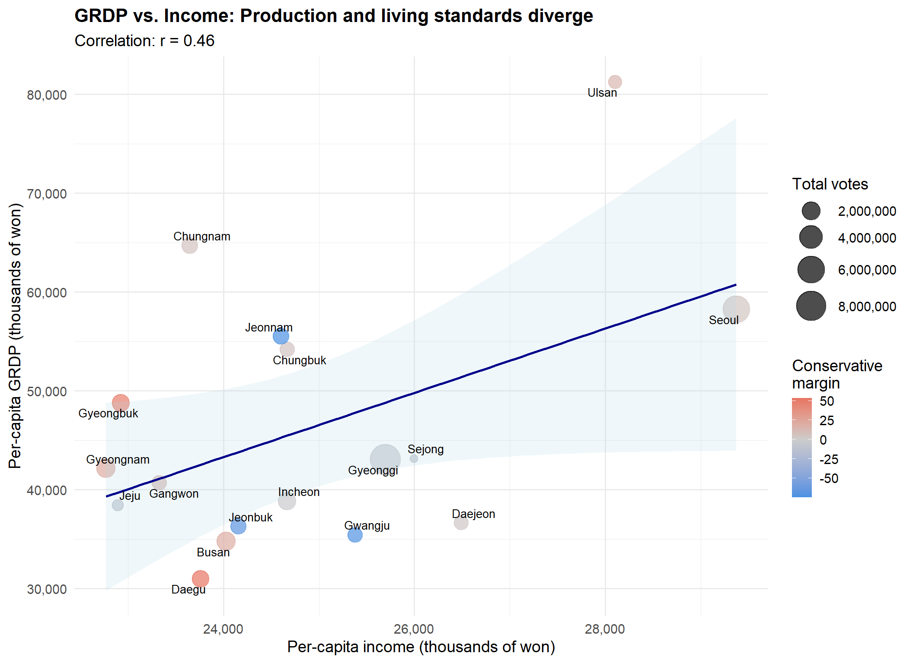
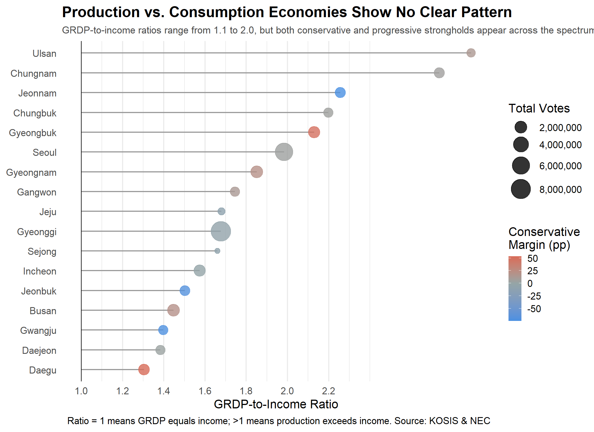

3.1 Geographic Context: South Korea’s Regional Landscape
South Korea is divided into 17 provinces and metropolitan cities, and each region has a large area and its own administrative center and is geographically distributed. In this project, since the visualization was composed using a single coordinate (administrative center) representing each city and province, the points are arranged at regular intervals in a form that reflects the distance between regions rather than densely filling the entire map. This arrangement is not a problem of data loss or visual gap, but it’s a result that naturally occurs in the aggregate characteristics of city/province data and the spatial scale of administrative districts, and is also suitable for clearly showing comparisons between regions in subsequent analysis.
Figure 3.1: Per capita income by province: circle size shows total voters, color shows income level
Geographic pattern clear: The map reveals a clear geographical pattern at the income level of each region in Korea. Especially, the northwest cluster, which is the metropolitan area centered on Seoul and Gyeonggi shows the highest per capita income and the large number of voters at the same time, showing bright colors and large circles. Ulsan stands out as a high-income industrial city along the southeastern coast, distinct from neighboring areas. In contrast, Gangwon Jeolla region, and some southern Gyeongsang areas are marked with relatively dark colors and small circles, indicating that the income level is low and the population size is small. Since the size of the circle is proportional to the number of voters, Seoul and major cities are particularly large, and it can be seen that the distribution of population and economic concentration appear spatially together.
Figure 3.2: 2022 Presidential Election—political lean by province. Blue = progressive (Lee), Red = conservative (Yoon)
Regional polarization stark: This map clearly illustrates Korea’s strong political polarization by region in the 2022 presidential election. The southwestern region, including Gwangju, Jeonbuk, and Jeonnam, represents overwhelming large margin for progressive candidates and is expressed in dark blue, indicating a large negative margin compared to conservative candidates. In contrast, the southeastern regions such as Daegu, Gyeongbuk, Gyeongnam, Busan, and Ulsan appear in dark red, revealing a strong conservative dominance. The capital region such as Seoul, Incheon, and Gyeonggi are marked with relatively light colors, indicating that the competition between the two candidates was much fiercer. Since the size of the circle reflects the number of voters, it is possible to visually check the pattern of population concentration around the metropolitan area. Overall, this visualization reveals the east-west regional composition and political division of the Korean election landscape very intuitively.
3.2 Q1. How unequal are regional income levels?
Code
prov %>%mutate(province =fct_reorder(province, income_2023)) %>%ggplot(aes(x = income_2023, y = province)) +geom_col(width =0.7, fill ="#999999") +geom_text(aes(label =comma(income_2023)),hjust =-0.1,size =4,fontface ="bold" ) +scale_x_continuous(labels =label_comma(),expand =expansion(mult =c(0, 0.15)) ) +labs(title ="Regional income inequality across Korea",subtitle ="Seoul's income is 29% higher than lowest province",x ="Per-capita income (thousands of won)",y =NULL ) +theme_minimal(base_size =14) +theme(panel.grid.major.y =element_blank(),plot.title =element_text(face ="bold", size =16) )

Figure 3.3: Per-capita income ranges from ₩22.8M (Gyeongnam) to ₩29.4M (Seoul).
The bar graph shows a clear disparities in the level of per capita income between 17 cities and provinces across the Korea. Seoul stand out as the highest income at about ₩29.4 million, while Gyeongnam has the lowest income at about ₩22.8 million, reaching a gap of about 29%. High income regions such as Ulsan, Daejeon, Sejong, and Gyeonggi are located at the top of the distribution, reflecting the concentration of economic activity in urban areas and a relatively higher paying industries. In contrast, several rural provinces, such as Gangwon, Gyeongbuk, Jeju, and Gyeongnam, are clustered in the lower part, indicating the economic hierarchy between regions. This continuous pattern of income decline is not just a coincidence but due to structural differences between metropolitan and industrial centers and the surrounding areas, showing how Korea’s spatial economic structure is reflected in the income gap by region.
Code
cor_val <-cor(prov$income_2023, prov$grdp_2023)prov %>%ggplot(aes(x = income_2023, y = grdp_2023)) +geom_point(aes(size = lee_votes + yoon_votes, color = conservative_margin),alpha =0.7 ) +geom_smooth(method ="lm", se =TRUE, color ="darkblue", fill ="lightblue", alpha =0.2, linewidth =1) +geom_text_repel(aes(label = province),size =3.5,max.overlaps =20 ) +scale_size_continuous(name ="Total votes",labels =label_comma(),range =c(3, 12) ) +scale_color_gradient2(low ="#4a90e2",mid ="gray80",high ="#e74c3c",midpoint =0,name ="Conservative\nmargin" ) +scale_x_continuous(labels =label_comma()) +scale_y_continuous(labels =label_comma()) +labs(title ="GRDP vs. Income: Production and living standards diverge",subtitle =sprintf("Correlation: r = %.2f", cor_val),x ="Per-capita income (thousands of won)",y ="Per-capita GRDP (thousands of won)" ) +theme_minimal(base_size =14) +theme(plot.title =element_text(face ="bold", size =16),legend.position ="right" )

Figure 3.4: GRDP and income show a modest positive correlation (r = 0.46).
The scatterplot compares the relationship between per-capita GRDP and per-capita income for each province, and shows that the regional “production level” and “living standard” only partially coincide. Overall, the higher the income, the higher the GRDP, but regions located large above the trend line, such as Ulsan and Chungnam, are representative examples of inconsistencies in which industrial production is very high compared to the income level of the residents. Conversely, regions with relatively low production scale, such as Gwangju and Jeonbuk, are located below the trend line, suggesting more modest production relative to income. In addition, the bubble size reflects the total number of votes in the region, and the metropolitan areas such as Seoul and Gyeonggi province appear large, and the color represents the degree of dominance of the conservative vote, so political orientation by region is visualized. Through this plot, Korea’s economic geography cannot be reduced to a single dimension that some regions are “production rich” without being equally “income rich,” and these differences interact with both population size and political orientation.
Figure 3.5: Every province leaned decisively toward one candidate.
The bar chart compares the vote rates of 17 cities and provinces nationwide in the 2022 presidential election, and highlights how clear the political polarization of Korea by region is. A 50% baseline in the center of the graph shows that no region showed a competitive structure close to 50:50, and all cities and provinces are clearly inclined toward one candidate. Honam region (Jeonnam, Gwangju, Jeonbuk) overwhelmingly supported progressive candidates, while Yeongnam region (Daegu, Gyeongbuk, and Gyeongnam) showed high support for conservative candidates. Even in the capital area such as Seoul, Incheon, and Gyeonggi Province, it seems to be balanced, but in reality, there is a clear difference. These results visually confirm that Korea’s regional political orientation is not an accidental change, but is structurally fixed, and that each region has a distinct ideological direction.
Figure 3.6: 129 percentage point spread from Jeonnam (-75pp) to Daegu (+54pp).
The chart visualizes the ‘conservative vote advantage’ of each region in the 2022 presidential election, and shows at a glance how extremely wide ideological divide. From Jeonnam (–74.7pp) to Daegu (+53.5pp), there is a total gap of 129 points, and it can be seen that there was virtually no competitive region as neither single region was close to zero. Honam (Jeonnam, Gwangju, and Jeonbuk) is the strongest progressive dominant region in the country, while Yeongnam (Daegu, Gyeongbuk, and Gyeongnam) is the strongest conservative dominant region. Although the capital areas such as Seoul, Gyeonggi, and Incheon are relatively close to the center, there are still clear deviations. Overall, this visualization clearly demonstrates that Korea’s election landscape is formed by structural regional alignment, not accidental fluctuations.
3.4 Q3. Does higher income predict conservative voting?
The scatterplot examines whether region with higher per capita income tend to vote more conservative, revealing that there is only a very weak relationship overall. The LOESS curve shows a weak increase in conservative tendencies in Seoul and Ulsan, where the income is highest, but the overall pattern is difficult to be linear. Jeonnam, Gwangju, and Jeonbuk, which have the middle income level, show strong progressive tendencies, and some low-income regions appear conservatively, forming a U-shaped distribution. This U-shapped pattern suggests that korea’s income levels do not consistently explain political orientation, and that regional identity and historical political structure have a greater influence on voting behavior. In addition, the size of the bubble visually reveals the high election influence of the capital region (Seoul and Gyeonggi) by reflecting the size of the population.
Figure 3.8: Conservative vote margins across four per-capita income quartiles.
The boxplot reveals that the relationship between income and conservative tendencies is not a linear pattern in which higher income simply leads to stronger conservatism. In particular, in the lowest income quartile (Q1), the most conservative regions such as Daegu, Gyeongbuk, and Gyeongnam are concentrated, showing a strong conservative tendency. In contrast, the middle income group (Q2, Q3) has the largest distribution from strong progressive regions such as Jeonnam, Gwangju, and Jeonbuk to conservative regions, and thus has great ideological diversity. The highest income quartile (Q4) shows a weak conservative tendency on average, but is much weaker than the strong conservative advantage shown in Q1. This U-shaped pattern suggests that the simply interpretation that ‘the higher the income, the more conservative’ is not established, that the lowest and highest income groups show conservative tendencies for different reasons, and that the middle income group has the most mixed ideological structure, including the progressive and strong regions.
3.5 Q4. Does GRDP predict politics like income does?
The scatterplot shows that per-capita GRDP has almost no systematic relationship with conservative voting, indicating that a region’s economic output does not translate directly into political preference. The LOESS curve is generally flat and shows only slight local fluctuations, and the correlation coefficient is also very weak (r ≈ 0.06). High GRDP provinces such as Ulsan do not consistently vote conservative, while low-GRDP regions such as Daegu exhibit strong conservative tendencies, and patterns that contradict a simple “wealthier regions vote conservative” explanation. This emphasizes that both income and GRDP have very weak power to explain voting propensity, and it is difficult to understand regional political propensity only by economic factors. This suggests that Korea’s voting pattern is more affected by regional identity and historical factors than by economic level.
Figure 3.10: Conservative vote margins across four per-capita GRDP quartiles.
The boxplot compares the gap between conservative votes by dividing the per-capita GRDP into four quartiles, and shows that there is no clear relationship between the GRDP level and conservative tendency. Even within the lowest GRDP group (Q1), strong conservative regions (Daegu and Gyeongbuk) and strong progressive regions (Gwangju and Jeonnam) exist at the same time, and there is no consistent pattern in Q2 and Q3 due to a mixture of conservative and progressive tendencies. Even in Q4, which has the highest GRDP, the conservative vote rate does not show a constant increase or decrease, and the distribution range between regions is very diverse. Overall, since all four quartiles do not show significant changes in conservative tendencies or predictable directions, the regional economic output level (GRDP) has little influence in explaining Korea’s regional political orientation, and the political pattern supports the conclusion that it is more determined by regional identity and historical factors than by economic structure.
3.6 Q5. Does Economic Structure Predict Regional Voting?
Code
prov |>mutate(province =fct_reorder(province, grdp_income_ratio)) |>ggplot(aes(x = province, y = grdp_income_ratio)) +geom_segment(aes(xend = province, y =1, yend = grdp_income_ratio),color ="gray60", linewidth =0.8) +geom_point(aes(color = conservative_margin, size = lee_votes + yoon_votes),alpha =0.8) +geom_hline(yintercept =1, linetype ="solid", color ="black", linewidth =0.5) +scale_color_gradient2(low ="#4a90e2", mid ="#95a5a6", high ="#e74c3c",midpoint =0,name ="Conservative\nMargin (pp)",labels =label_number(suffix ="") ) +scale_size_continuous(name ="Total Votes",labels =label_comma(),range =c(3, 12) ) +scale_y_continuous(breaks =seq(1, 2.2, 0.2)) +coord_flip() +labs(title ="Production vs. Consumption Economies Show No Clear Pattern",subtitle ="GRDP-to-income ratios range from 1.1 to 2.0, but both conservative and progressive strongholds appear across the spectrum.",x =NULL,y ="GRDP-to-Income Ratio",caption ="Ratio = 1 means GRDP equals income; >1 means production exceeds income. Source: KOSIS & NEC" ) +theme(plot.title =element_text(face ="bold", size =20),plot.subtitle =element_text(size =13, color ="gray30"),legend.position ="right",panel.grid.major.y =element_blank() )

Figure 3.11: GRDP-to-income ratios vary widely, but conservative margins show no systematic pattern.
This lollipop chart compares the GRDP-income ratio of each region (the structural indicator of production-oriented economy vs. consumption-oriented economy) with the gap in the number of conservative votes. The ratio is spread out from about 1.1 to 2.0, but strong conservative areas and strong progressive areas are mixed and distributed throughout the section. For example, Daegu and Gyeongbuk, which have very strong conservative tendencies, and Gwangju and Jeonnam, which have very strong progressive tendencies, are all located near 1.3 to 1.5, and Ulsan and Chungnam, which have high ratios, are also close to the middle level rather than overwhelming conservatism. The fact that there is no clear gradient of color (conservative gap) along the vertical axis means that even regions with similar economic structures may have very different political tendencies. Along with the previous income and GRDP analysis, neither income level nor production structure strongly explain Korea’s regional voting patterns, supporting the interpretation that regional identity and historical factors play a much more important role.